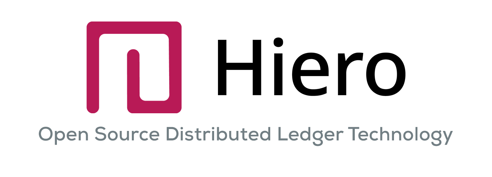

HIP stands for Hiero Improvement Proposal. A HIP is intended to provide information or initiate engineering efforts to update functionality under Hiero governance. The HIP should be technically clear and concise, and as granular as possible. Small, targeted HIPs are more likely to reach consensus and result in a reference implementation.
HIPs are intended to be the primary mechanism for proposing new features, for collecting community input, and for documenting the design decisions that go into the Hiero codebase. The HIP author is responsible for building consensus within the community and documenting dissenting opinions. For HIPs that propose changes to the Hiero codebase (typically Standards Track HIPs for Core, Service, or Mirror Node categories), the process involves Hiero providing technical approval and Hedera providing review and acceptance if the changes are to be incorporated into the Hedera network or ecosystem. Because the HIPs are maintained as text files in a versioned repository, their revision history is the historical record of the proposal. HIPs are not meant to address *bugs* in implemented code. Bugs should be addressed using issues on the implementation\'s repository.
The hashgraph consensus algorithm was created by Dr. Leemon Baird. Originally, Hedera was a public network built on top of this algorithm; later, Hedera donated its codebase to the open-source Linux Foundation project now known as Hiero. You can learn more by reading the hashgraph algorithm whitepaper.
The goal of HIPs is to have a transparent, collaborative place to propose new features, collect community input on a particular issue, and document proposals and reasoning in one place. Publishing these proposals on GitHub means every revision is recorded in version history.
See HIP-1 for details on the current HIP process.
Each HIP should outline a single key proposal or idea, kept focused to a single subject for clarity. A HIP must meet certain minimum criteria: it must be clearly written, describe the proposed enhancement completely, represent a net improvement, and (if applicable) include a solid reference implementation that does not unduly complicate the network.
There are three kinds of HIP:
Evaluate your idea: consider why you’d like to request changes or improvements and how it benefits the broader Hiero community.
Check existing proposals to ensure there are no duplicates.
Discuss the idea with the Hiero community (for example, on Hedera’s Discord or LFDT's Discord) to confirm whether it’s original or if it’s been addressed before.
Reevaluate your proposal to make sure it is generally applicable and not limited to a single project or narrow use case.
An excellent place to discuss your proposal and get feedback is in the issues section of this repository or on Hedera’s Discord or on LFDT's Discord. There, you can gather community input and refine the language around your HIP to ensure broad support.